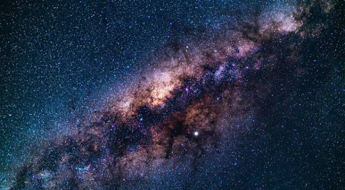

ดาวฤกษ์ กาแล็กซี และเอกภพ
ดาวฤกษ์
ดาวฤกษ์ คือ วัตถุท้องฟ้าที่สามารถสร้างพลังงานและปล่อยแสงออกมาได้ด้วยตัวเอง โดยพลังงานส่วนใหญ่เกิดจากปฏิกิริยานิวเคลียร์ฟิวชันภายในดาวฤกษ์ ดาวฤกษ์แต่ละดวงมีขนาด อุณหภูมิ สี และอายุแตกต่างกัน ดวงอาทิตย์ของเราก็เป็นดาวฤกษ์ดวงหนึ่งเช่นกัน
กาแล็กซี
กาแล็กซี คือ กลุ่มขนาดใหญ่ของดาวฤกษ์ ก๊าซ ฝุ่น และวัตถุต่าง ๆ ที่รวมตัวกันด้วยแรงโน้มถ่วง โลกและระบบสุริยะของเราอยู่ในกาแล็กซีทางช้างเผือก ซึ่งมีดาวฤกษ์จำนวนมหาศาล
นอกจากทางช้างเผือกแล้ว ยังมีกาแล็กซีอีกมากมายในเอกภพ เช่น กาแล็กซีแอนดรอเมดา กาแล็กซีรูปกังหัน และกาแล็กซีรูปทรงอื่น ๆ
เอกภพ
เอกภพ หมายถึง ทุกสิ่งทุกอย่างที่มีอยู่ ทั้งอวกาศ เวลา สสาร และพลังงาน นักวิทยาศาสตร์เชื่อว่าเอกภพมีการขยายตัว และการศึกษากำเนิดและวิวัฒนาการของเอกภพเป็นหนึ่งในหัวข้อสำคัญของดาราศาสตร์
การศึกษาดาวฤกษ์ กาแล็กซี และเอกภพ ช่วยให้มนุษย์เข้าใจโครงสร้างของจักรวาล รวมถึงค้นหาคำตอบเกี่ยวกับจุดกำเนิดของเอกภพและความเป็นไปได้ของสิ่งมีชีวิตในอวกาศ